X
Le Soleil
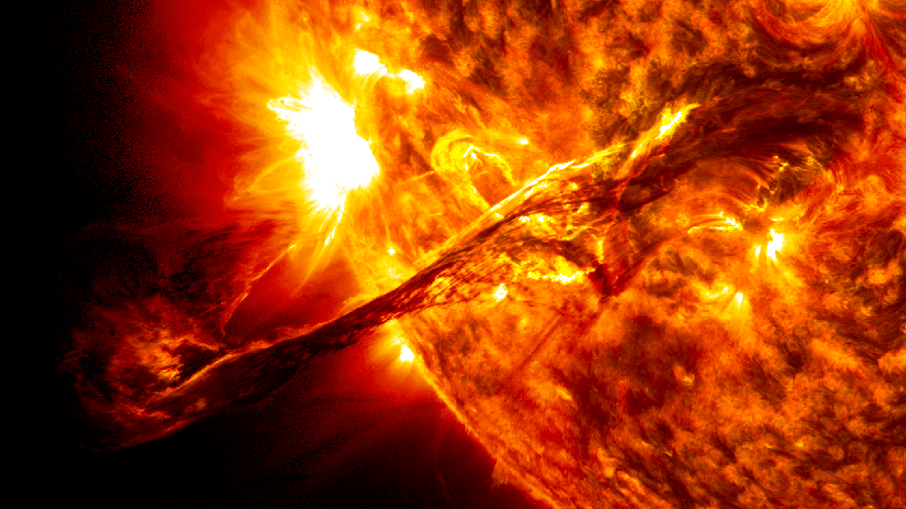
Masse: 1,9891×10³⁰ kg
Rayon: 696 342 km
Superficie: 6,0877×10¹² km²
Vitesse de libération: 617,54 km/s
Période galactique: 2,26×10⁸ a
Période de rotation: 27,28 j
Température du noyau: 15,1 MK
Température de surface: 5 750 K
Distance du centre galactique: 2,50×10¹⁷ km
Composition: Hydrogène: 73,46 %, Hélium: 24,85 %
Satellites principaux: Mercure, Venus, Terre, Mars, Jupiter, Saturne, Uranus, Neptune, Pluton
X
Suivre
Mercure
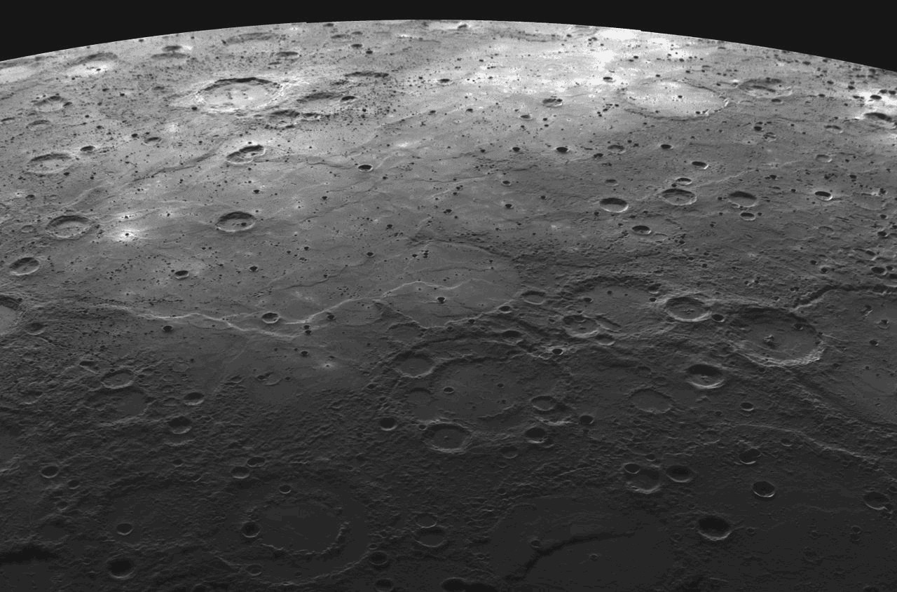
Masse: 330,2×10²¹ kg
Rayon équatorial: 2 439,7 km
Superficie: 75×10⁶ km²
Vitesse de libération: 4,435 km/s
Période de révolution: 87,96934 j
Période de rotation: 58,6462 j
Température moyenne: 442 K
Distance au Soleil: 46 - 70×10⁶ km
X
Suivre
Venus
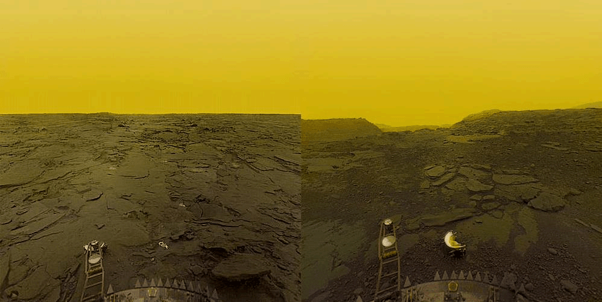
Masse: 4,8685×10²⁴ kg
Rayon équatorial: 6 051,8 km
Superficie: 460×10⁶ km²
Vitesse de libération: 10,46 km/s
Période de révolution: 224,701 j
Période de rotation: -243,023 j
Température moyenne: 735 K
Distance au Soleil: 107 - 109×10⁶ km
X
Suivre
La Terre
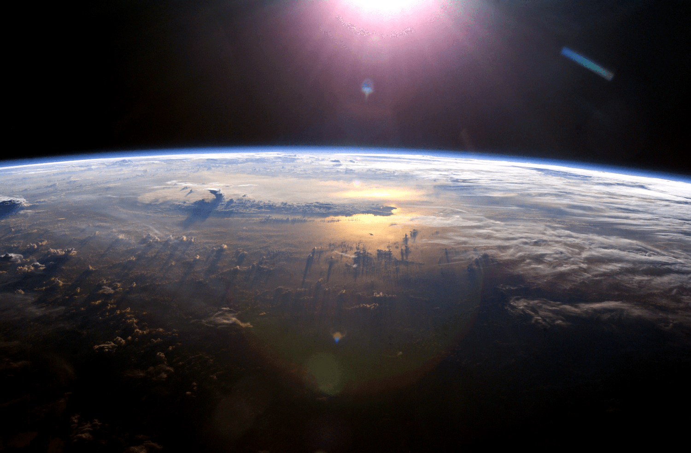
Masse: 5,9736×10²⁴ kg
Rayon équatorial: 6 378,137 km
Superficie: 510×10⁶ km²
Vitesse de libération: 11,186 km/s
Période de révolution: 365,256363 j
Période de rotation: 0,99726949 j
Température moyenne: 288,15 K
Distance au Soleil: 149,6×10⁶ km
Satellites principaux: Lune
X
Suivre
La Lune
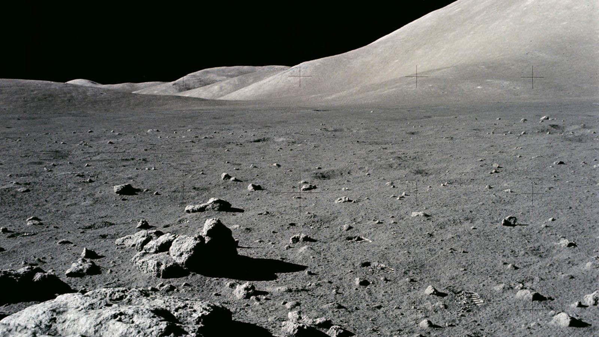
Masse: 7,3477×10²² kg
Rayon équatorial: 1 737,4 km
Superficie: 37×10⁶ km²
Vitesse de libération: 2,38 km/s
Période de révolution: 27,321582 j
Période de rotation: 27,321582 j
Température moyenne: 250 K
Distance à la Terre: 400 000 km
X
Suivre
Mars
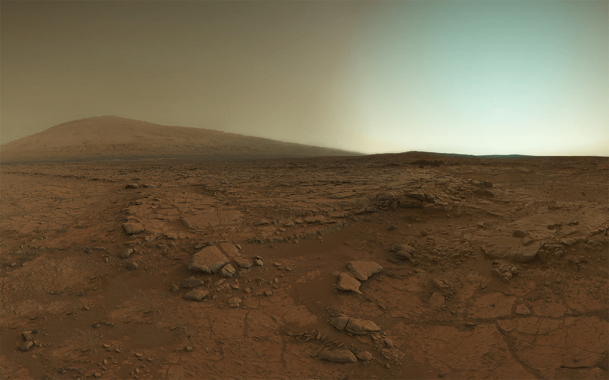
Masse: 641,85×10²¹ kg
Rayon équatorial: 3 396,2 km
Superficie: 144×10⁶ km²
Vitesse de libération: 5,027 km/s
Période de révolution: 686,9601 j
Période de rotation: 1,025957 j
Température moyenne: 210 K
Distance au Soleil: 206,6 - 249,2×10⁶ km
Satellites principaux: Phobos, Deimos
X
Suivre
Phobos
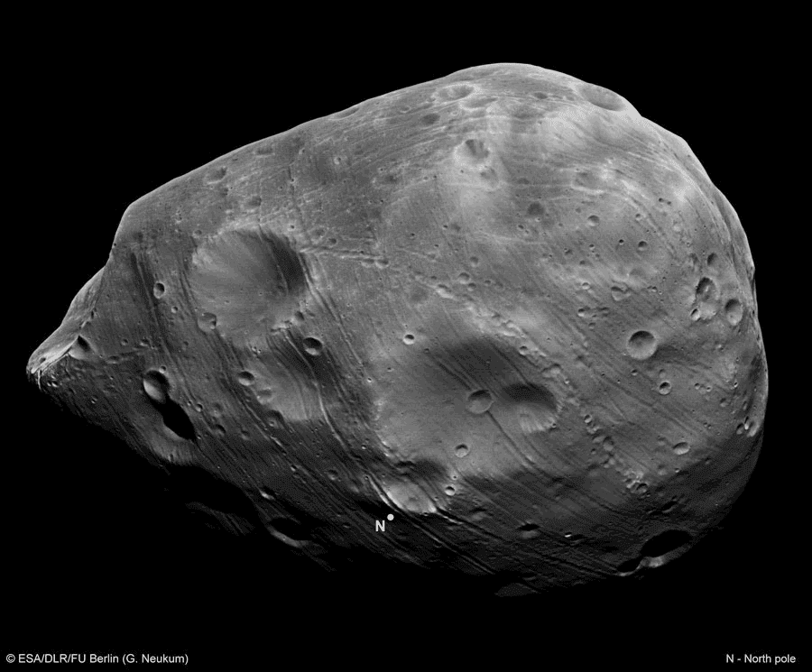
Masse: 1,072×10¹⁶ kg
Dimensions: 26,8 × 21,6 × 18,4 km
Période de révolution: 0.365 j
Période de rotation: 0.365 j
Température moyenne: 233 K
Distance à Mars: 9 377 km
X
Suivre
Deimos
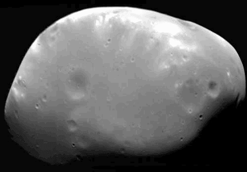
Masse: 1,48×10¹⁵ kg
Dimensions: 15 × 12 × 10.4 km
Période de révolution: 1.096 j
Période de rotation: 1.096 j
Température moyenne: 233 K
Distance à Mars: 23 460 km
X
La ceinture d'astéroïdes
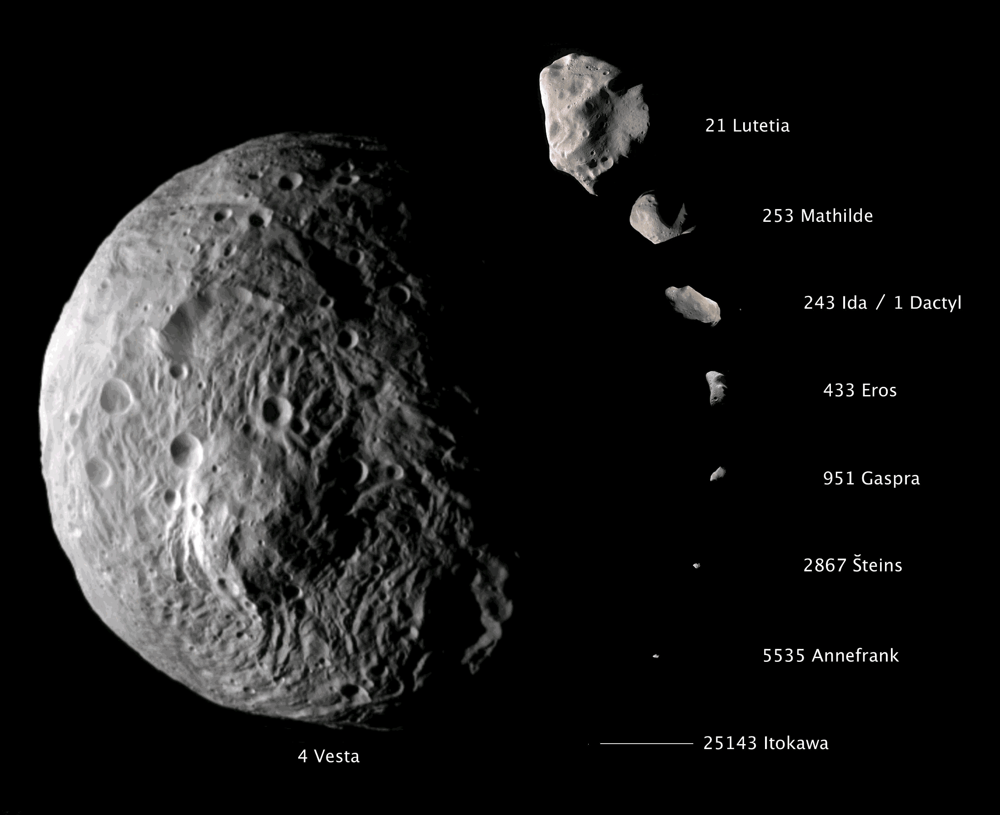
Masse: 3,0-3,6×10²¹ kg
Nombre d'astéroïdes connues: plusieurs centaines de milliers
Nombre estimé d'astéroïdes: plusieurs millions
Astéroïdes principales: Cérès, Vesta, Phallas, Hygée
Distance moyenne séparant chaque astéroïde: 1×10⁶
Distance au Soleil: varie en fonction de l'astéroïde, 254,3 - 673.2×10⁶
X
Suivre
Jupiter
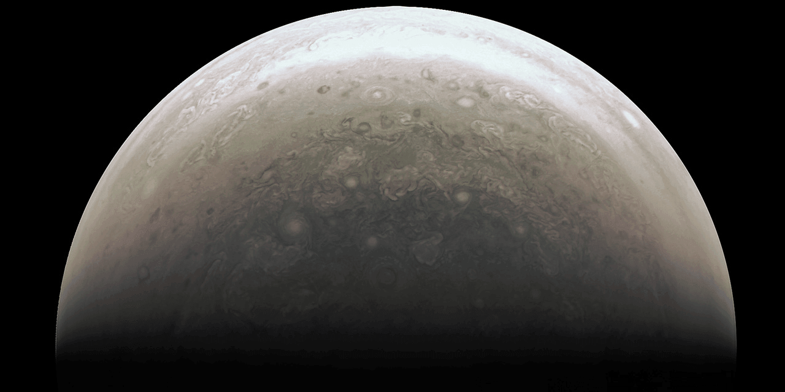
Masse: 1,8986×10²⁷ kg
Rayon équatorial: 71 492 km
Superficie: 6,14×10¹⁰ km²
Vitesse de libération: 59,5 km/s
Période de révolution: 4 335,3545 j
Période de rotation: 0,41351 j
Température de surface: 112 - 165 K
Distance au Soleil: 778,4×10⁶ km
Satellites principaux: Io, Europe, Ganymède, Callisto
X
Suivre
Io
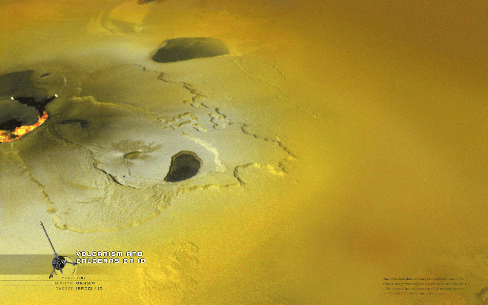
Masse: 8,93×10²² kg
Rayon équatorial: 1821,6 km
Superficie: 41×10⁶ km²
Vitesse de libération: 2,6 km/s
Période de révolution: 1,769 j
Période de rotation: 1,769 j
Température moyenne: 130 K
Distance à Jupiter: 421 800 km
X
Suivre
Europe
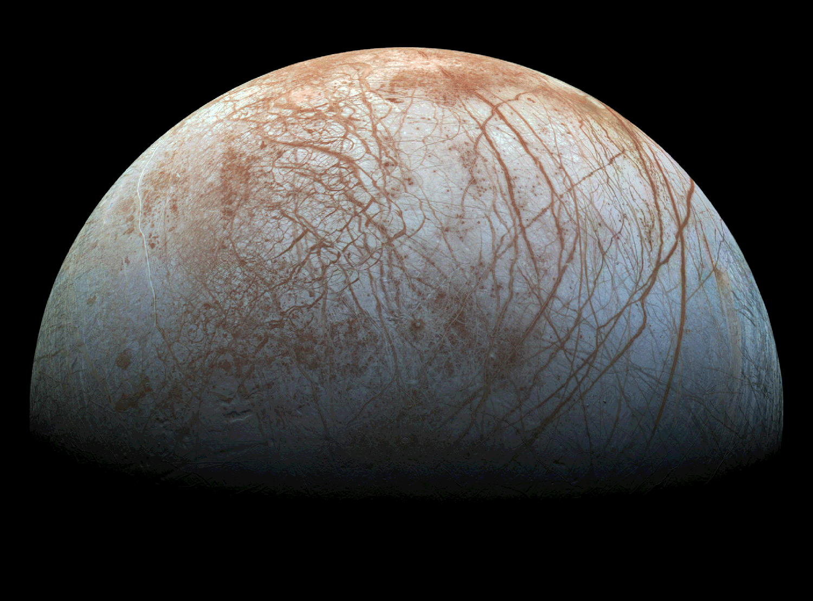
Masse: 4,8×10²² kg
Rayon équatorial: 1560,8 km
Superficie: 30,9×10⁶ km²
Vitesse de libération: 2 km/s
Période de révolution: 3,551181 j
Période de rotation: 3,551181 j
Température moyenne: 125 K
Distance à Jupiter: 671 100 km
X
Suivre
Ganymède
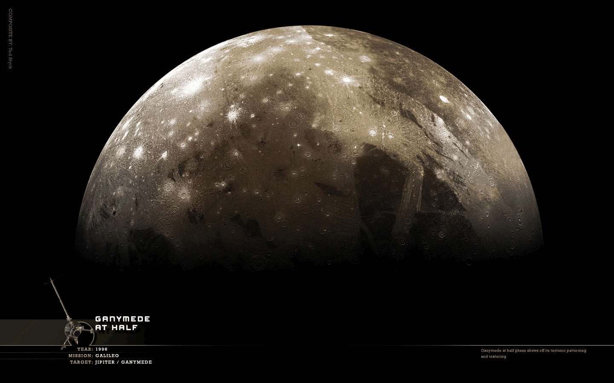
Masse: 14,819x10²² kg
Rayon équatorial: 2631,2 km
Superficie: 86,99×10⁶ km²
Vitesse de libération: 2,742 km/s
Période de révolution: 7,1545529 j
Période de rotation: 7,1545529 j
Température moyenne: 110 K
Distance à Jupiter: 1 070 400 km
X
 Suivre
Suivre
Callisto
Masse: 10,75938x10²² kg
Rayon équatorial: 2410,15 km
Superficie: 73×10⁶ km²
Vitesse de libération: 2.440 km/s
Période de révolution: 16,6890184 j
Période de rotation: 16,6890184 j
Température moyenne: 134 K
Distance à Jupiter: 1 882 700 km
X
Suivre
Saturne
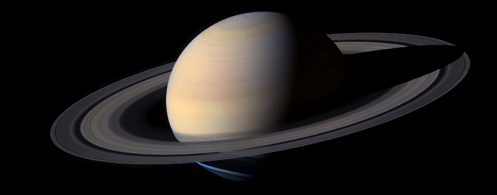
Masse: 568,46×10²⁴ kg
Rayon équatorial: 58 232 km
Superficie: 4,3466×10¹⁰ km²
Vitesse de libération: 35,5 km/s
Période de révolution: 10 757,7365 j
Période de rotation: 0,448 j
Température de surface: 84 - 134 K
Distance au Soleil: 1 429,39×10⁶ km
Satellites principaux: Mimas, Encelade, Tethys, Dione, Rhea, Titan, Iapetus
X
Suivre
Mimas
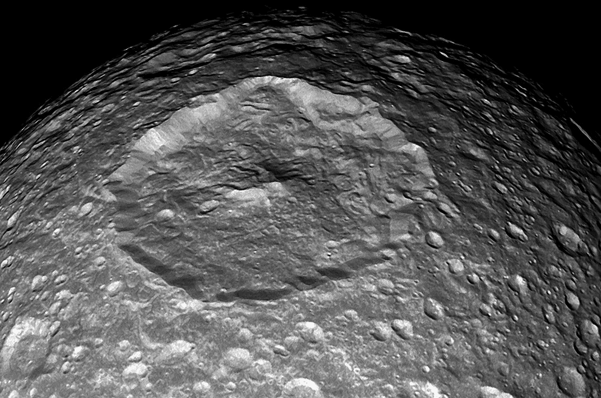
Masse: 3,84×10×10¹⁹ kg
Rayon équatorial: 198,2 km
Superficie: 500 000 km²
Vitesse de libération: 0,159 km/s
Période de révolution: 0,942 j
Période de rotation: 0,942 j
Température moyenne: 64 K
Distance à Saturne: 185 520 km
X
Suivre
Encelade
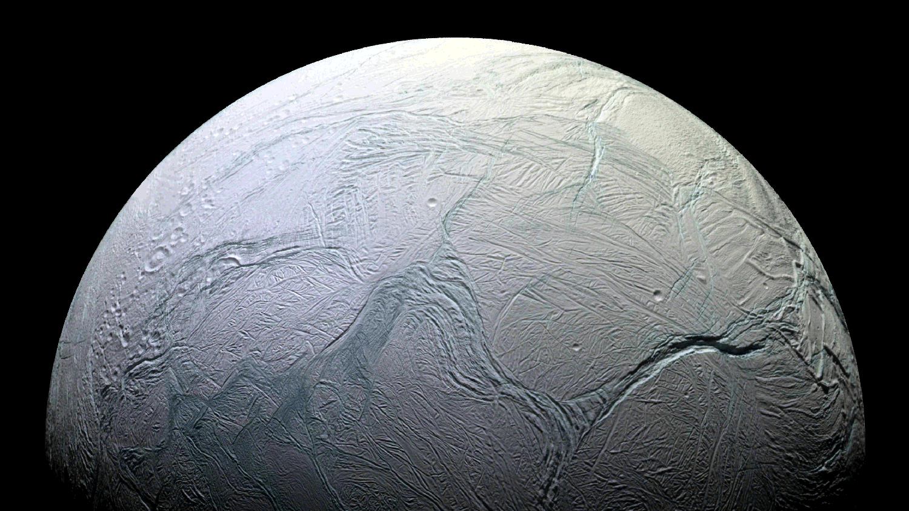
Masse: 10,794×10¹⁹ kg
Rayon équatorial: 252,1 km
Superficie: 798 648,27 km²
Vitesse de libération: 0,239 km/s
Période de révolution: 1,370218 j
Période de rotation: 1,370218 j
Température moyenne: 75 K
Distance à Saturne: 238 037 km
X
Suivre
Tethys
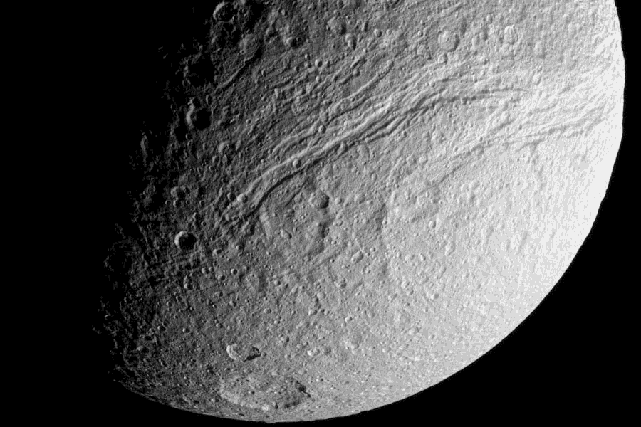
Masse: 61,755×10¹⁹ kg
Rayon équatorial: 533 km
Superficie: 3,569×10⁶ km²
Vitesse de libération: 0,394 km/s
Période de révolution: 1,887 j
Période de rotation: 1,887 j
Température moyenne: 86 K
Distance à Saturne: 294 672 km
X
Suivre
Dione
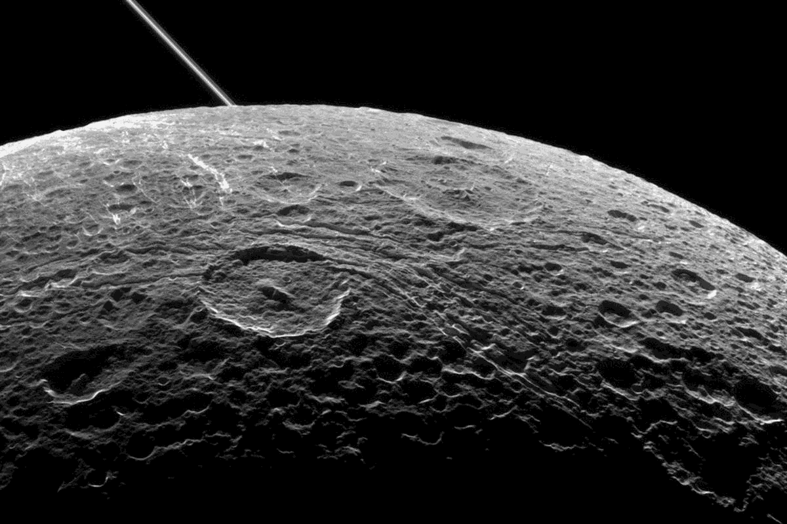
Masse: 109,57×10¹⁹ kg
Rayon équatorial: 561,7 km
Superficie: 3,964×10⁶ km²
Vitesse de libération: 0,510 km/s
Période de révolution: 2,737 j
Période de rotation: 2,737 j
Température moyenne: 87 K
Distance à Saturne: 377 415 km
X
Suivre
Rhea
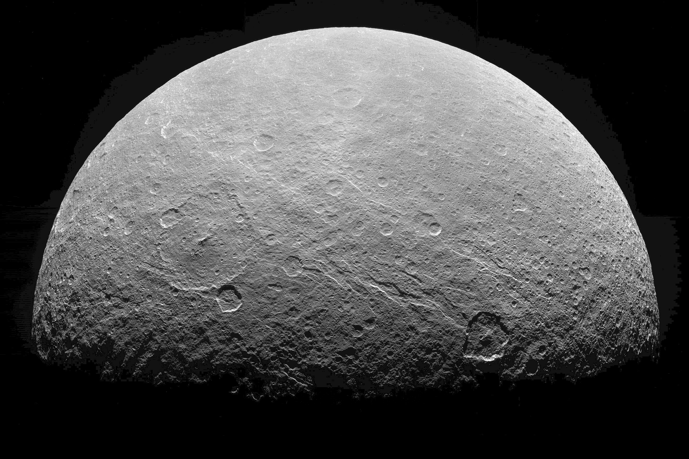
Masse: 230,709×10¹⁹ kg
Rayon équatorial: 764,3 km
Superficie: 7,340×10⁶ km²
Vitesse de libération: 0,635 km/s
Période de révolution: 4,518 j
Période de rotation: 4,518 j
Température moyenne: 76 K
Distance à Saturne: 527 068 km
X
Suivre
Titan
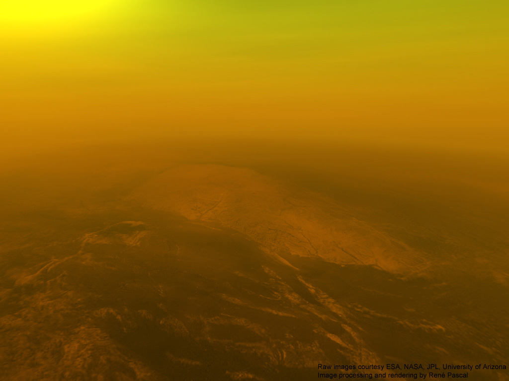
Masse: 1 345,5×10²⁰ kg
Rayon équatorial: 2 574,7 km
Superficie: 83,305×10⁶ km²
Vitesse de libération: 2,639 km/s
Période de révolution: 15,945 j
Période de rotation: 15,945 j
Température moyenne: 94 K
Distance à Saturne: 1 221 865 km
X
Suivre
Iapetus
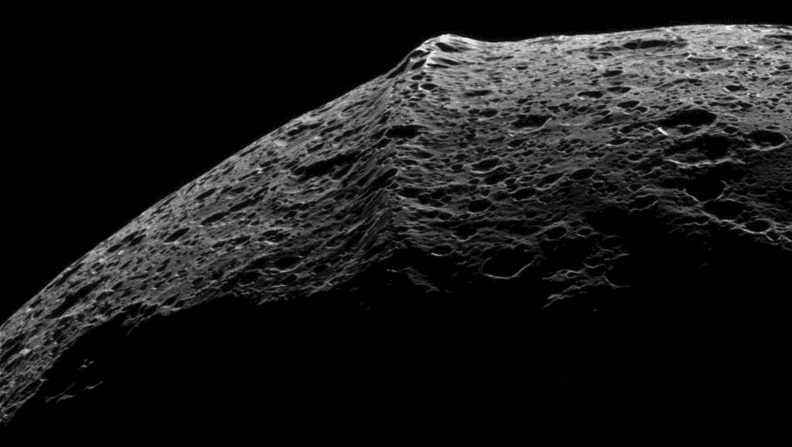
Masse: 18,059×10²⁰ kg
Rayon équatorial: 735,6 km
Superficie: 6,79×10⁶ km²
Vitesse de libération: 0,573 km/s
Période de révolution: 79,3215 j
Période de rotation: 79,3215 j
Température moyenne: 90 - 130 K
Distance à Saturne: 3 560 851 km
X
Suivre
Uranus
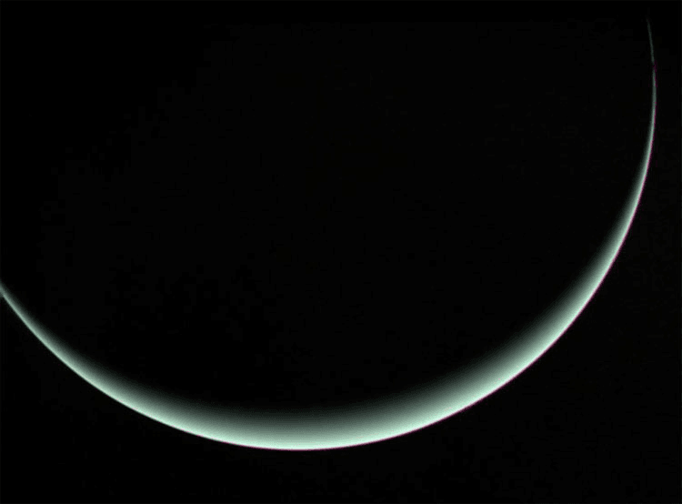
Masse: 8,6810×10²⁵ kg
Rayon équatorial: 25 362 km
Superficie: 8,0831×10⁹ km²
Vitesse de libération: 21,3 km/s
Période de révolution: 30 684.,653 j
Période de rotation: -0,731 j
Température de surface: 57 K
Distance au Soleil: 2 870,39×10⁶ km
Satellites principaux: Miranda, Ariel, Umbriel, Titania, Oberon
X
Suivre
Miranda
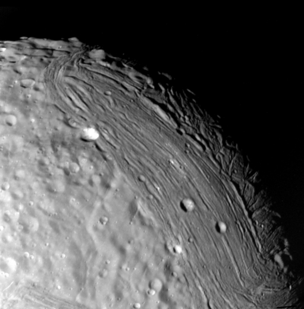
Masse: 65,941×10¹⁸ kg
Rayon équatorial: 235,8 km
Superficie: 698 710,82 km²
Vitesse de libération: 0,193 km/s
Période de révolution: 1,38 j
Période de rotation: 1,38 j
Température moyenne: 60 K
Distance à Uranus: 129 900 km
X
Suivre
Ariel
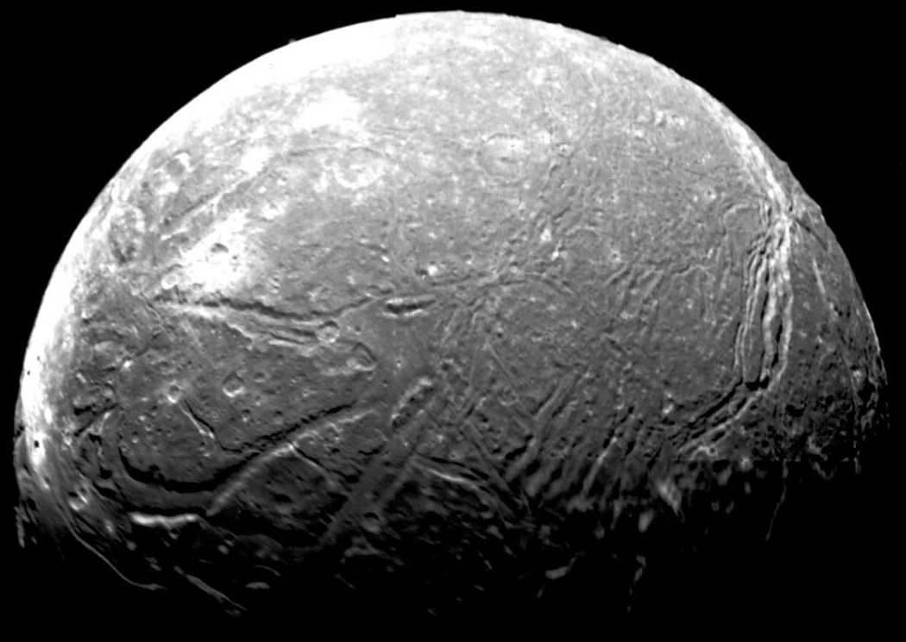
Masse: 12,948×10²⁰ kg
Rayon équatorial: 578,9 km
Superficie: 4,211×10⁶ km²
Vitesse de libération: 0,559 km/s
Période de révolution: 2,484 j
Période de rotation: 2,484 j
Température moyenne: 60 K
Distance à Uranus: 190 900 km
X
 Suivre
Suivre
Umbriel
Masse: 12,214×10²⁰ kg
Rayon équatorial: 584,7 km
Superficie: 4,296×10⁶ km²
Vitesse de libération: 0,52 km/s
Période de révolution: 4,018 j
Période de rotation: 4,018 j
Température moyenne: 75 K
Distance à Uranus: 266 000 km
X
Suivre
Titania
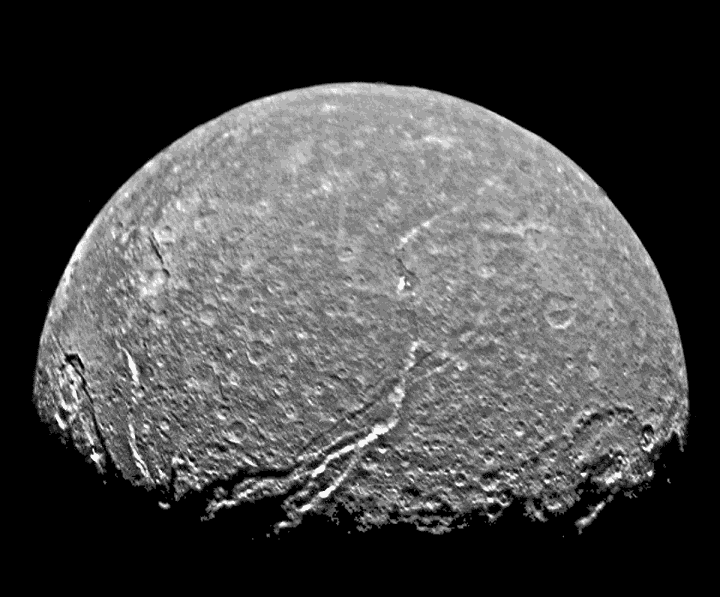
Masse: 34,200×10²⁰ kg
Rayon équatorial: 788,9 km
Superficie: 7,820×10⁶ km²
Vitesse de libération: 0,773 km/s
Période de révolution: 8,766 j
Période de rotation: 8,766 j
Température moyenne: 70 K
Distance à Uranus: 436 300 km
X
Suivre
Oberon
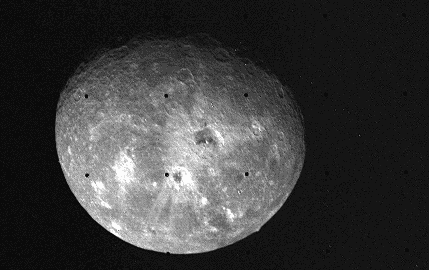
Masse: 28,834×10²⁰ kg
Rayon équatorial: 761,4 km
Superficie: 7,285×10⁶ km²
Vitesse de libération: 0,727 km/s
Période de révolution: 13,149 j
Période de rotation: 13,149 j
Température moyenne: 70 - 80 K
Distance à Uranus: 583 500 km
X
Suivre
Neptune
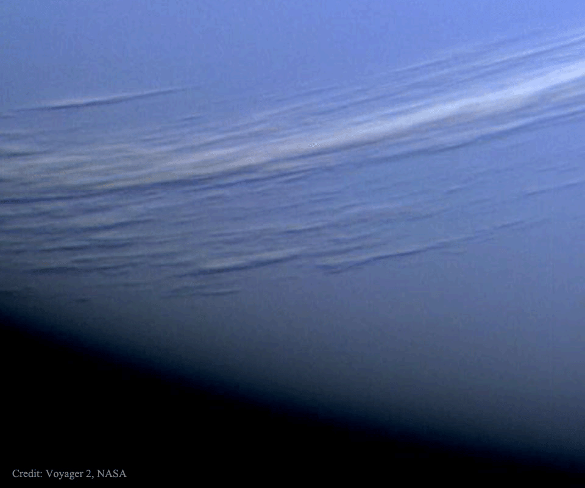
Masse: 10,241×10²⁵ kg
Rayon équatorial: 24 622 km
Superficie: 7,6183×10⁹ km²
Vitesse de libération: 23,5 km/s
Période de révolution: 60 189,548 j
Période de rotation: 0,6713 j
Température de surface: 55 - 72 K
Distance au Soleil: 4 498,39×10⁶ km
Satellites principaux: Triton
X
Suivre
Triton
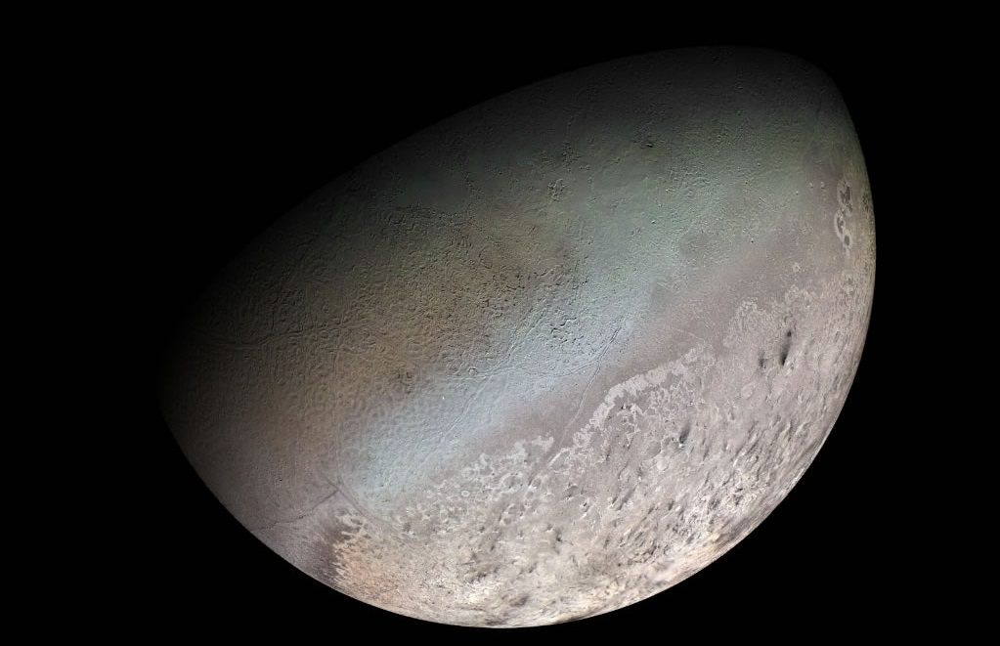
Masse: 213,95×10²⁰ kg
Rayon équatorial: 1 353,4 km
Superficie: 23,017×10⁶ km²
Vitesse de libération: 1,455 km/s
Période de révolution: 7,305 j
Période de rotation: 7,305 j
Température moyenne: 38 K
Distance à Neptune: 354 759 km
X
Suivre
Pluton
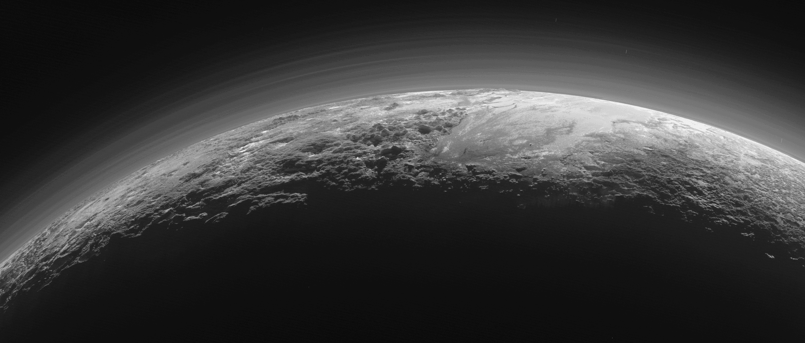
Masse: 13,090×10²¹ kg
Rayon équatorial: 1 151 km
Superficie: 16,647×10⁶ km²
Vitesse de libération: 1,212 km/s
Période de révolution: 90 589,305 j
Période de rotation: 6,387 j
Température de surface: 44 K
Distance au Soleil: 5 906,44×10⁶ km
Satellites principaux: Charon
X
Suivre
Charon
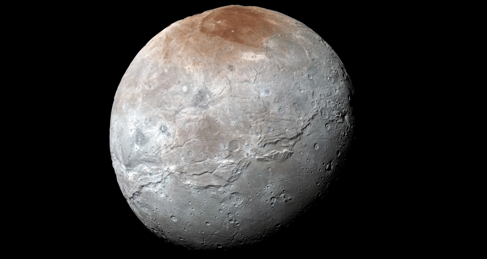
Masse: 15,86×10²⁰ kg
Rayon équatorial: 603,6 km
Superficie: 4,578×10⁶ km²
Vitesse de libération: 0,59 km/s
Période de révolution: 6,387 j
Période de rotation: 6,387 j
Température moyenne: 53 K
Distance à Pluton: 17 536 km
X
La ceinture de Kuiper
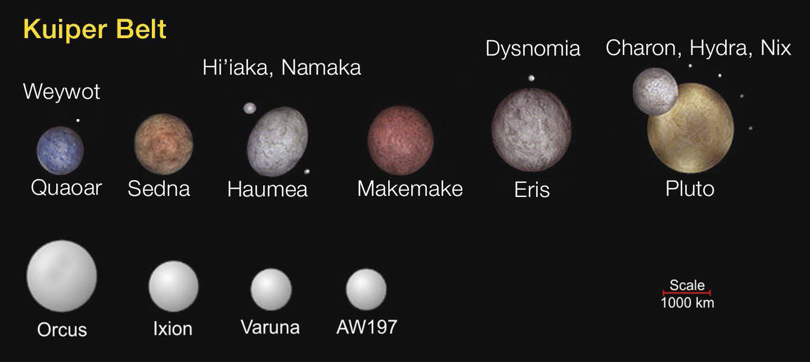
Masse: ~ 1/10 de masse Terrestre kg
Nombre d'objets de plus de 100km de diamètre: + 70 000
Objets principaux: Makemake, Haumea, Eris
Température moyenne de la ceinture: 50 K
Composition des objets de la ceinture: hydrocarbures légers (méthane, ammoniac, etc)
Distance au Soleil: varie en fonction de l'objet, 4,487 - 8,227×10⁹ km
X
Suivre
67P/Tchourioumov
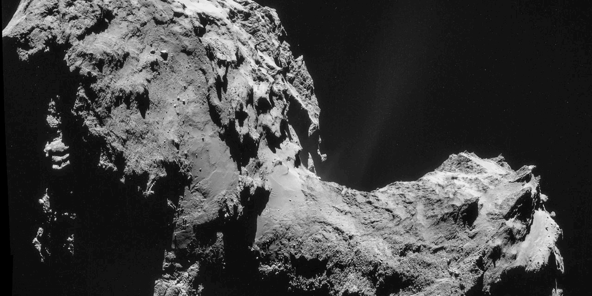
Masse: 9,982×10¹² kg
Vitesse de libération: 1 m/s
Période de révolution: 6,44 a
Période de rotation: 12,4043 h
Température de surface: 180 - 230 K
Distance au Soleil: 518,060×10⁶ km